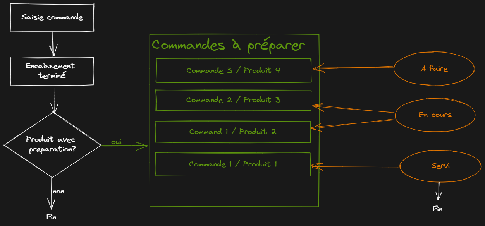

🐘
TechnoZaure
Nantes 2022 #2
Track Tech

Pourquoi un logiciel de caisse ?
Pourquoi un logiciel de caisse ?
Contexte
Club de Voile
Club Nautique de Mazerolles
Forum des associations
Buvette du forum (avec restauration)
Buvette
🛒Entre 100 et 150 clients
Additions à n'en plus finir
💳TPE avec saisie manuelle
Pourquoi un logiciel de caisse ?
Besoin
Faciliter les calculs
Communiquer avec le TPE
Historisation des transactions (→ comptabilité)
Existant
1 ERP (odoo), une solution en client lourd ...
Rien de concluant
Quels aspects et besoins ont été pris en compte
Quels aspects et besoins ont été pris en compte
- Besoin comptable
- Facilité d'utilisation
- Connexion au TPE
- Responsivité (multi-device)
- Produits catégorisables/éditables
- Statistiques sur les ventes
Utilisateurs et formation
- Tech & non-tech
- Jeunes & non-jeunes
Objectif : Formation de l'utilisateur minimale
Résultat :
Formation initiale → 10 min
Succédée par des formations en pair à pair
Formation initiale → 10 min
Succédée par des formations en pair à pair
Une IHM est comme une blague, s'il y a besoin de l'expliquer, c'est
que ce n'est pas bon.
Petite démo
Séniorité rime avec ... priorités
Séniorité rime avec ... priorités
-
Temps de dev faible :
- Focus sur les objectifs principaux et les plus complexes : connexion avec le TPE
- Impasses : Sécurisation, branding open-source, nommage du projet, tests ...
Séniorité rime avec ... diversité
-
Choix de prendre plusieurs technos adaptées à différents besoins :
- Python → bas niveau + facilité à créer une api REST (pysocket + flask)
- PHP → Objectif à long terme d'héberger l'outil sur un hébergement mutualisé
- React → parce que, pourquoi pas ?
Séniorité rime avec ... juniorité
- Problème simpliste
- Choix des technos
- Efficacité
Architecture software
Architecture hardware
Le petit ➕
✨La fonction préparation de commande
✨La fonction préparation de commande
Le petit ➕
✨La fonction préparation de commande

✨La fonction préparation de commande
Petit bilan après le baptême du feu 🔥
- Tout s'est bien passé 👍. Seules 3 crêpes ont été préparées en trop. Deux gros coup de chaud (lié à l'aspect répétitif des commandes).
- Un rush de 11h50 à 14h30 😅
- Un système approuvé par tout le monde ğŸ˜
Petit bilan après le baptême du feu 🔥
Améliorations à prévoir :
- Affichage plus marqué des commandes et des produits associés en prépa commande
- Sécuriser enfin les accès (OAuth2)
- Documenter les branchements des différents morceaux du hardware
Q
U
E
S
T
I
O
N
S
?
Q
U
E
S
T
I
O
N
S
?
Merci
Philippe TONY
philippetony
PhilTheTea
Développeur / Formateur
@ Zenika Nantes ğŸ˜
Club Nautique de Mazerolles
https://cnmaz.fr
https://cnmaz.fr
Slides :
https://github.com/philippetony/how-can-seniority-help-in-writing-a-cash-register-software